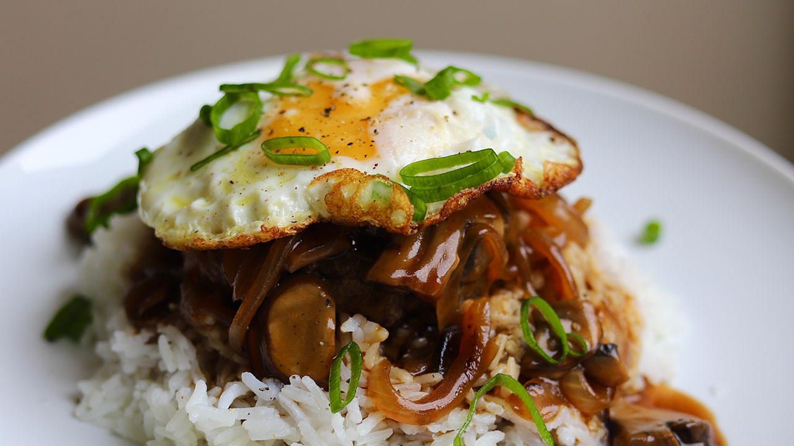

Loco Moco

Description
Three layers of rice, hamburger patty, and an egg smothered in a savory gravy. One serving is enough to make anyone have a kanak attack.
Ingredients
- Gravy:
- 1 1/2 cup beef stock
- 5 tsp cornstarch
- 4 tsp soy sauce
- 1 tsp Worcestershire sauce
- 2 tsp ketchup
- Hamburger patty:
- 1 1/2 lb ground beef
- 1 tbsp Worcestershire sauce
- 1 1/2 tsp seasoning salt
- 1 tsp garlic powder
- 1/2 tsp black pepper
- 1 small onion sliced
- 3/4 cup mushrooms
- 1-2 tbsp butter
- Sunny side-up eggs (one per serving)
- Rice
- Scallions (chopped)
Steps
- Mix all ingredients for gravy and set aside.
- Mix all ingredients for hamburger patties and form into patties (3/4-1 inch thick).
- Heat pan on medium heat and cook patties for 3-5 mins on each side.
- Set each patty on a piece of paper to catch excess grease.
- In the same pan, melt 1 tbsp of butter. Once butter is melted, add onions & cook for 1 min.
- Add mushrooms & cook for 2 mins.
- Melt 1 more tbsp of butter (optional) & pour in gravy sauce. Cook & stir until sauce is thickened.
- Assemble rice, patty, sauce, egg & scallion for garnish.